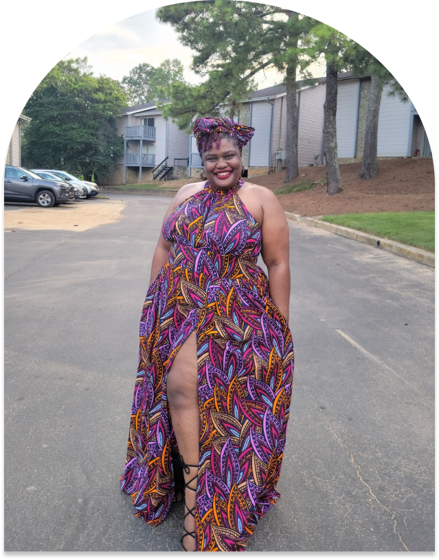

About The Founder
Cerissa A. Brown
Cerissa “Reecee” Brown, the founder and visionary leader of Reecee's Reach, is a Christ-centered nonprofit organization dedicated to confronting the mental health disparities and systemic issues affecting Black women in Birmingham, Alabama.
A remarkable leader with over 15 years of experience in community organizing and mental health advocacy, Cerissa's passion for mental health initiatives was evident during her 2021 campaign for Mayor of Birmingham. Her unswerving commitment to mental health was a cornerstone of her campaign.
“Cerissa envisions a future where racial equity, economic opportunity, and culturally appropriate mental health care are daily realities for Black women. Reecee's Reach is not merely an organization; it symbolizes Cerissa's personal journey and lifelong commitment to transforming the mental health landscape for Black women.“
In March 2023, this passion crystallized into action, and Reecee's Reach was born. Driven by empathy and determination, the organization's mission is to provide support and resources for Black women facing mental health challenges. As a Black woman who personally grapples with mental health issues, Cerissa understands firsthand the struggles and obstacles hindering access to quality mental health care for this demographic. Financial constraints, stigma, church hurt, and a lack of culturally sensitive care were barriers she encountered, fueling her resolve to create a safe, inclusive space for healing and empowerment.
Cerissa's belief in the power of Christ, community, and compassion guides the mission and values of Reecee's Reach. She envisions a future where racial equity, economic opportunity, and culturally appropriate mental health care are daily realities for Black women. Reecee's Reach is not merely an organization; it symbolizes Cerissa's personal journey and lifelong commitment to transforming the mental health landscape for Black women.
Currently pursuing a Bachelor of Social Work (BSW) from Walden University and holding a certification in Women's Entrepreneurship from Cornell University, Cerissa's educational and professional endeavors reflect her unceasing commitment to empowering Black women and positively impacting their lives.
Reecee's Reach is more than a service provider; it is a living testament to Cerissa A. Brown's vision and dedication. Join us as we continue our journey, championing mental health for Black women in Birmingham, and learn how you can contribute to this transformative initiative.